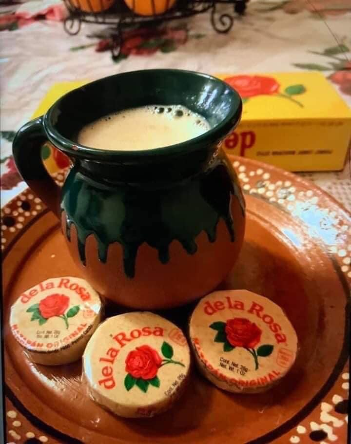

Atole de mazapán

Description
A hot sweet beberage specially create for the cold night in December.
Perfect companion for a concha bread or cake.
Ingredients:
- 2 litros de leche
- 1 vara de canela
- 1 lata de leche condensada
- 1 lata de leche evaporada
- 6 cucharadas de maizena
- Media taza de leche (aparte para mezclar con maizena)
Steps:
- Hervir la leche con la canela.
- Licuar la lata de leche condensada, la lata de leche evaporada y 7 mazapanes.
- Agregar la mezcla licuada a la olla con la leche hirviendo.
- Mezclar 6 cucharadas de maizena con media taza de leche y agregar a la olla.
- Dejar hervir el contenido en la olla.